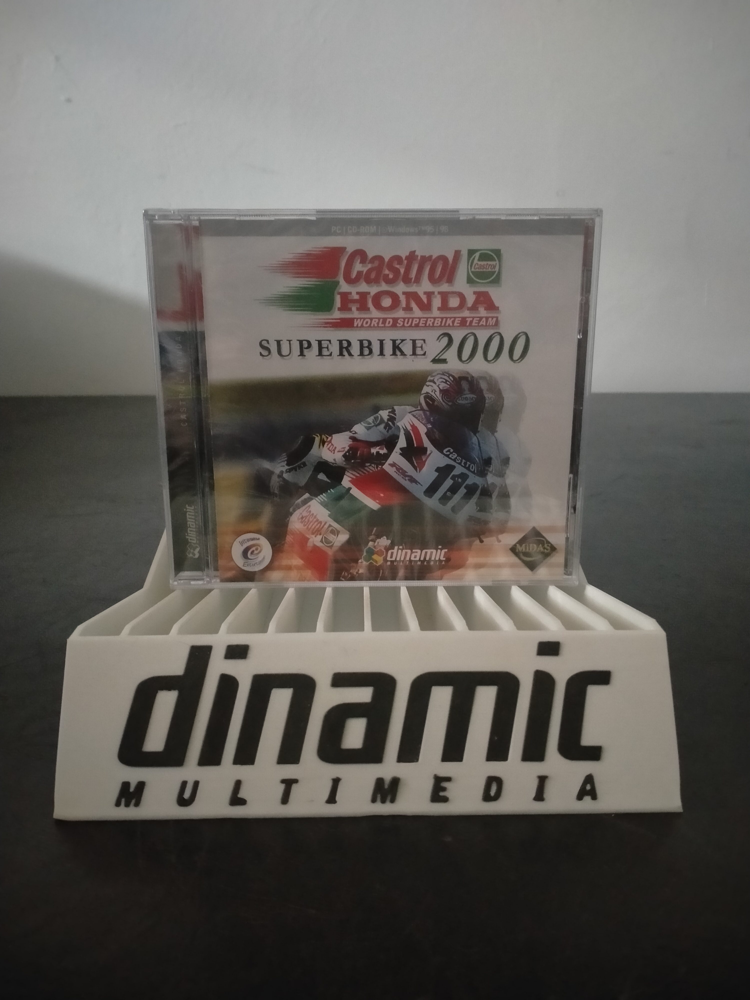

Ficha #000000
Castrol Honda World Superbike Team: Superbike 2000
Castrol Honda World Superbike Team: Superbike 2000 es un videojuego de motociclismo desarrollado por Interactive Entertainment Ltd. y publicado originalmente por Midas Interactive Entertainment a finales de los años noventa. La edición española fue distribuida por Dinamic Multimedia para Windows 95 y Windows 98. El título cuenta con licencia del equipo Castrol Honda del Campeonato Mundial de Superbikes y permite pilotar la Honda RVF750 RC45 asociada a los pilotos Aaron Slight y Colin Edwards. Su propuesta combina conducción accesible con opciones de simulación, sesiones de entrenamiento, práctica, clasificación, carreras individuales y un campeonato completo. También permite configurar aspectos mecánicos de la motocicleta, ajustar el grado de realismo y competir bajo condiciones meteorológicas variables. Esta edición localizada al castellano representa la expansión de los simuladores de motociclismo para PC durante la etapa de consolidación de DirectX y la aceleración gráfica tridimensional.
- Formato
- Jewel Case
- Plataforma
- Win95 Win98
- Género
- Simulación de motociclismo Carreras Simulación deportiva Conducción
- Serie
- Todos Jewel Case Dinamic multimedia
- Desarrollador
- Interactive Entertainment Ltd.
- Distribuidor
- Midas Interactive Entertainment, Dinamic Multimedia
- EAN
- 8426239092005
Contenido de la edición
- Caja Jewel Case
- CD-ROM
- Manual de instrucciones
Preservación
- Protección
- No determinado
- Formato recomendado
- BIN/CUE
- Jugable en virtualización
- Sí
Se recomienda crear una imagen completa del CD-ROM original y conservar digitalizaciones de la carátula y del manual. Una imagen BIN/CUE permite documentar adecuadamente la estructura del soporte mientras se verifica si la edición incorpora pistas adicionales o alguna comprobación física del disco. La ejecución virtual es viable mediante Windows 95 o Windows 98 virtualizado, aunque puede requerir aceleración gráfica compatible con DirectX 6 o ajustes específicos para hardware tridimensional antiguo.